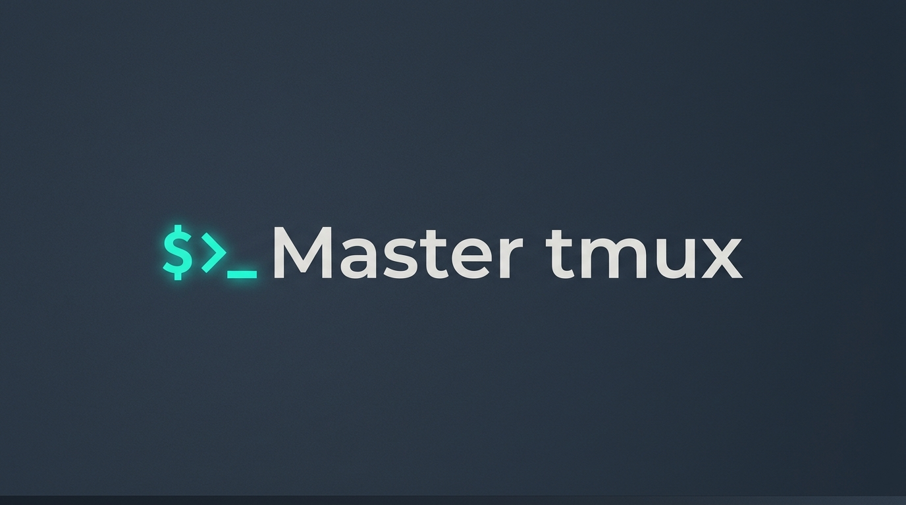
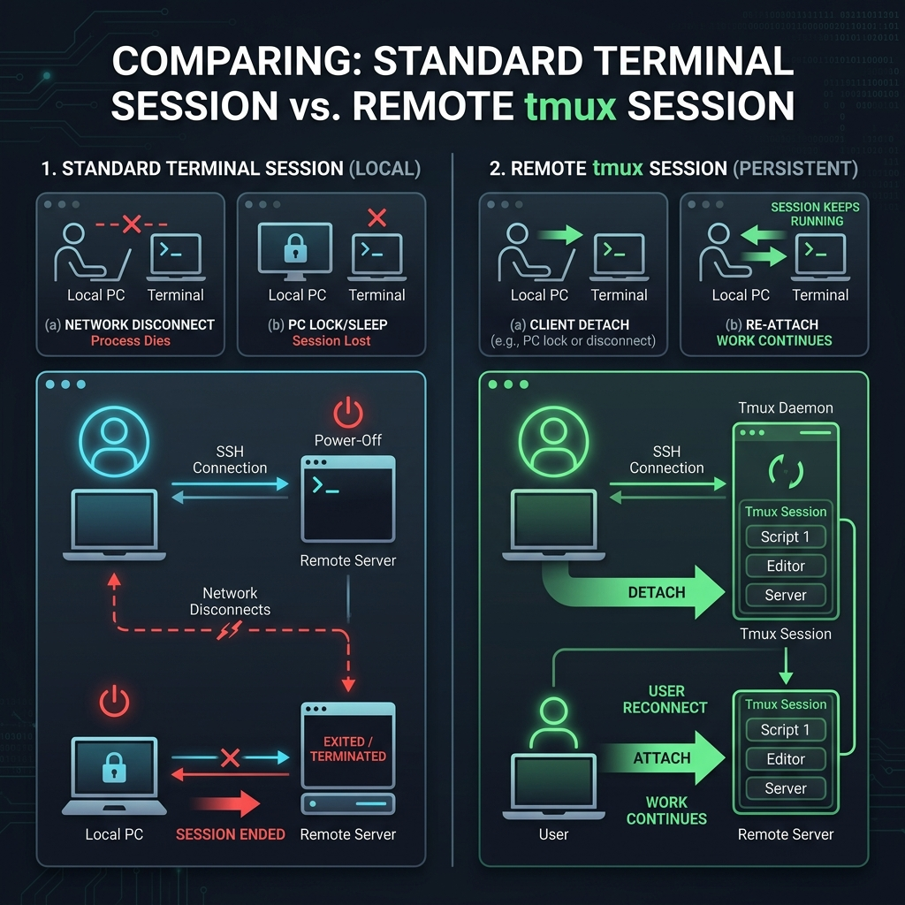

Mastering tmux: Headless Sessions, Persistent Workflows & Automation

💡 Originally published on Medium.
In a typical software developer's workflow, SSH disconnect anxiety is a silent productivity killer. Whether you're running a long-term build, training an AI model, or migrating database records on a remote server, a sudden network drop or unstable connection can abruptly halt your command, leave tasks incomplete, and force hours of tedious cleanup.
In this guide, we'll explore how tmux (Terminal Multiplexer) completely redefines terminal persistence, headless session management, and remote workflow automation.
What You'll Learn
- 🎯 The Tmux Daemon: How persistent background sessions survive network drops and reboots.
- 💡 The Four Pillars: Headless execution, session attachment, SendKey integration, and session capture.
- 🚀 Automation Aliases: Custom shell aliases for lightning-fast workspace navigation and control.
Why Manual Sessions Die (And How Remote Tmux Saves the Day)
When you create a standard manual session or execute commands directly in your terminal, your session is tightly bound to your client connection:
- If you lock your PC, close your laptop, or experience a network disconnect, the terminal session receives a signal to terminate.
- The running process dies instantly, interrupting builds, scripts, or downloads.
In contrast, a remote tmux session runs on the server via a persistent backend daemon:
- Even if your local PC restarts, your network drops, or you walk away for the weekend, your tmux session stays active on the remote system for as long as required.
- You can simply reconnect via SSH, check your active sessions, and jump right back in using
tmux attach(ortmux-attach), or leave it running in the background usingtmux detach(ortmux-detach).

The Four Distinct Pillars of Tmux Power
There are four core capabilities that make tmux sessions remarkably powerful for developers and automation engineers:
1. Headless Execution
The primary benefit is the ability to run tasks completely independently of your active terminal session. Because sessions are created and managed automatically by tmux, you are freed from manually supervising foreground processes.
2. Session Attachment
Once initialized, you can step inside the environment (attach), execute your workflow, and detach whenever needed. Even if your terminal experiences a network drop, the processes stay alive. You can re-login, run tmux attach, and pick up exactly where you left off.
3. SendKey Integration (tmux send-keys)
This allows you to dispatch commands directly into a headless session without needing to actively log into it. You can keep persistent workspaces running in the background and seamlessly trigger long-running commands on demand from scripts or CLI wrappers.
4. Session Capture
When sending background commands to an unseen session, verifying output or determining when to execute subsequent steps is critical. The capture function lets you review active logs and trace exactly what is happening inside a headless environment without attaching.
Supercharge Your Workflow with Custom Aliases
To make interacting with tmux effortless, add these productivity aliases to your terminal configuration file (~/.bashrc or ~/.zshrc):
alias "tmux-newsession"="tmux new-session -d -s"
alias "tmux-ls"="tmux ls"
alias "tmux-kill-session"="tmux kill-session -t"
alias "tmux-attach"="tmux attach -t"
alias "tmux-send-keys"="tmux send-keys -t"
alias "tmux-detach"="tmux detach"
💡 Pro Tip: Once configured, you can simply type
tmux-and press TAB to easily discover, autocomplete, and execute any of these commands instantly!
Practical Guide: How to Use Tmux Like a Pro
Let's walk through the core lifecycle commands using our streamlined aliases:
1. Create a New Detached Session
To create a background session named hello-world:
tmux-newsession hello-world
2. List Active Sessions
To inspect all currently running tmux sessions:
tmux-ls
3. Attach to a Session
To connect interactively to the hello-world session:
tmux-attach hello-world
4. Send Commands Headlessly (Without Attaching)
You can execute commands inside hello-world directly from your current terminal:
# List directory contents
tmux-send-keys hello-world "ls -la" Enter
# Run a long-running process
tmux-send-keys hello-world "sleep 500" Enter
# Send interrupt signal (Ctrl+C)
tmux-send-keys hello-world "C-c" Enter
5. Detach from a Session
If you are inside an active tmux session and want to leave it running in the background without exiting:
tmux-detach
(Note: This command is run from within an active tmux session).
6. Stop or Kill a Session
To terminate the session cleanly:
tmux-kill-session hello-world
Or gracefully stop running tasks and exit:
tmux-send-keys hello-world "C-c" Enter
tmux-send-keys hello-world "exit" Enter
Pro Feature: Real-Time Multi-Client Synchronization
One of the most powerful advantages of detached or headless sessions is the ability to connect via multiple terminal instances simultaneously.
When you attach to a single session from different windows or SSH terminals, executing a command in one immediately synchronizes and updates across all of them in real-time. A headless tmux environment ensures flawless collaboration and monitoring across every attached client instance.
Key Takeaways
✅ Daemon Persistence: Your jobs survive SSH disconnects and network drops.\
✅ Headless Automation: Use tmux send-keys to script background workflows without manual login.\
✅ Aliased Speed: Wrap native tmux commands into short, TAB-completable aliases (tmux-newsession, tmux-attach).
Let's Connect!
Found this guide helpful? I'd love to hear your thoughts or share your tmux tips!